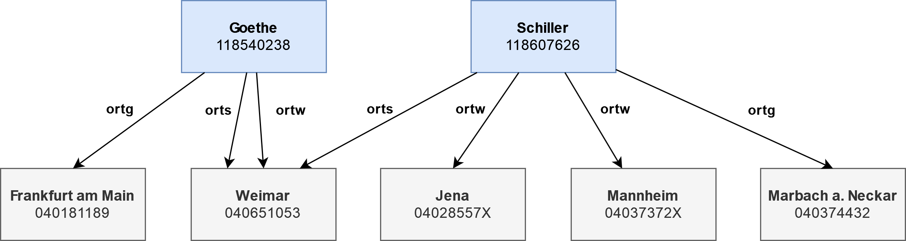

check
Das check-Kommando erlaubt es, Datensätze auf Konformität mit einem Regelwerk zu überprüfen. In einer oder mehreren Konfigurationsdateien können Regeln hinterlegt werden, gegen die jeder Datensatz überprüft wird. Trifft eine Regel zu, wird diese Regelverletzung unter Angabe der PPN (Feld 003@ $0) des Datensatzes und der ID der Regel in eine Ausgabedatei geschrieben. Die ID einer Regel kann von den Nutzenden frei gewählt werden.
Befinden sich die spezifizierten Regeln in der Datei rules.toml, kann mit dem folgenden Befehl die Datei DUMP.dat.gz gegen das Regelwerk überprüft werden. Die Ausgabe erfolgt im CSV-Format in die Ausgabedatei out.csv:
$ pica check -R rules.toml DUMP.dat.gz -o out.csvSoll ein Regelwerk nur gegen eine Teilmenge der Eingabe getestet werden, erfolgt dies durch Einschränkung des Geltungsbereichs (scope) mithilfe eines Filterausdrucks:
scope = '002@.0 =^ "T"'
[rule.XYZ]
...Nicht bei jeder Regelverletzung handelt es sich gleich um einen Fehler. Deshalb wird zwischen folgenden Levels unterschieden:
- Fehler —
error, - Warnung —
warning, - und Info —
info.
Konfiguriert wird das Level über die level-Option. Ist die Option nicht gesetzt, wird automatisch das Level error ausgewählt:
[rule.XYZ]
level = "warning"Zur Nachvollziehbarkeit und Dokumentation kann eine Regel mit einer Beschreibung (description) und einem Link (link) ausgezeichnet werden:
[rule.XYZ]
description = "Findet Datensätze, die gegen die Regel XYZ verstoßen."
link = "https://www.example.org/XYZ"Checks
Datetime
Der datetime-Check überprüft, ob in einem Feld ein gültiges Datum bzw. Zeitangabe steht. Die Angabe der zu überprüfenden Felder erfolgt mittels der Option path, welche einen Pfadausdruck erwartet.
[rule.DATETIME]
check = "datetime"
description = "Findet ungültige Datumsangaben im Feld 010@ $D."
link = "https://wiki.dnb.de/display/ILTIS/1500"
format = "%Y-%m-%d"
path = "010@.D"Optionen
case-ignore = true | false- Ist die Option gesetzt, wird die Groß- und Kleinschreibung beim Vergleichen von Werten ignoriert.
strsim-threshold = <value>-
Festlegen des Schwellenwerts beim Ähnlichkeitsvergleich von Zeichenketten mittels des
=*-Operators. format = <string>-
Angabe des Format-Strings, der das Format der Datums- bzw. Zeitangabe festlegt. Ist die Option nicht gesetzt, wird standardmäßig der Format- String
%Y-%m-%dverwendet. offset = <n>-
Mit der
offset-Option können die ersten<n>Zeichen übersprungen werden, wenn die Datums- bzw. Zeitangabe nicht am Anfang des zu überprüfenden Feldes steht.
Filter
Mittels des filter-Checks können Datensätze gefunden werden, die einem Filterausdruck entsprechen. Zum Beispiel können mit der folgenden Regel Datensätze gefunden werden, die einen ungültigen Projektcode im Feld 017C $a enthalten:
[rule.TITLE-017C-001]
check = "filter"
description = "Findet ungültige Projektcodes im Feld 017C $a."
link = "https://wiki.dnb.de/display/ILTIS/0602"
filter = '017C.a not in ["a","d","f","i","m","n","t"]'Optionen
case-ignore = true | false- Ist die Option gesetzt, wird die Groß- und Kleinschreibung beim Vergleichen von Werten ignoriert.
strsim-threshold = <value>-
Festlegen des Schwellenwerts beim Ähnlichkeitsvergleich von Zeichenketten mittels des
=*-Operators. invert-match = true | false- Ist die Option gesetzt, werden Datensätze gefunden, die nicht dem Filterausdruck entsprechen.
ISNI
Die Gültigkeit eines ISNI-Identifikators, bspw. einer ORCID, lässt sich mit dem isni-Check überprüfen.
Die folgende Regel findet ungültige ORCID-Identifikatoren im Feld 028A $y, wobei nur die Werte überprüft werden, die mit dem Präfix (orcid) beginnen:
[rule.ORCID]
check = 'isni'
description = 'Findet ungültige ORCID-Einträge im Feld 028A $y.'
link = 'https://wiki.dnb.de/display/ILTIS/3000'
path = '028A{ y | y =^ "(orcid)" }'
prefix = '(orcid)'Optionen
case-ignore = true | false- Ist die Option gesetzt, wird die Groß- und Kleinschreibung beim Vergleichen von Werten ignoriert.
strsim-threshold = <value>-
Festlegen des Schwellenwerts beim Ähnlichkeitsvergleich von Zeichenketten mittels des
=*-Operators. prefix = '<prefix>'-
Es werden nur Werte überprüft, die mit dem Präfix
<prefix>beginnen. Wird kein Präfix angegeben, werden alle Werte despath-Ausdrucks überprüft.
ISO 639-2B
Ob ein Unterfeld einen gültigen Sprachencode nach ISO 639-2B enthält, lässt sich mit dem iso639-2b-Check testen. Die zu überprüfenden Werte werden mit path adressiert:
[rule.SPRACHENCODE]
check = 'iso639-2b'
description = 'Findet ungültige Sprachencodes im Feld 010@ $a.'
link = 'https://wiki.dnb.de/display/ILTIS/1500'
path = '010@.a'Optionen
case-ignore = true | false- Ist die Option gesetzt, wird die Groß- und Kleinschreibung beim Vergleichen von Werten ignoriert.
strsim-threshold = <value>-
Festlegen des Schwellenwerts beim Ähnlichkeitsvergleich von Zeichenketten mittels des
=*-Operators.
Link
Der link-Check überprüft, ob Verknüpfungen zwischen Datensätzen existieren. Zur Erläuterung der Funktionsweise soll ein Beispiel dienen: Die beiden Normdatensätze Goethe und Schiller sind im Feld 065R mit einem Geografikum in Beziehung gesetzt. Der verknüpfte Datensatz ist im Unterfeld $9 hinterlegt und die Art der Beziehung ist im Unterfeld $4 kodiert. Im folgenden Beispiel sind nur die Beziehungen Sterbeort (orts), Geburtsort (ortg) und Wirkungsort (ortw) relevant. In der folgenden Grafik ist das Beziehungsgeflecht dargestellt:

Goethes Normdatensatz, reduziert auf die relevanten Felder, sieht wie folgt aus:
$ pica filter -k '003@, 065R' '003@.0 == "118540238"' DUMP.dat.gz | pica print
003@ $0 118540238
065R $9 040181189 $7 Tg1 $V gik $A gnd $0 4018118-2 $a Frankfurt am Main $4 ortg
065R $9 040651053 $7 Tg1 $V gik $A gnd $0 4065105-8 $a Weimar $4 orts
065R $9 040651053 $7 Tg1 $V gik $A gnd $0 4065105-8 $a Weimar $4 ortwDer einfachste Test, der sich mit dem link-Check formulieren lässt, ist zu überprüfen, ob die Zieldatensätze in der Menge der Eingabe existieren. Hierzu muss ein Pfad-Ausdruck source angegeben werden, mit dem alle Identifikatoren ermittelt werden, die in den Zieldatensätzen gesucht werden. In unserem Beispiel ist dies der Ausdruck 065R.9, der die PPNs der Zieldatensätze ermittelt. Als Zweites wird noch ein Pfad- Ausdruck benötigt, der die Werte im Zieldatensatz adressiert. Da der Abgleich über die PPN eines Datensatzes erfolgt, wird der Ausdruck 003@.0 als Ziel (target) benötigt. Es ergibt sich folgende Regel:
[rule.LINK1]
check = 'link'
source.path = '065R.9'
target.path = '003@.0'Zur Ermittlung der Ziel-Identifikatoren source können alle Funktionen der Pfad-Ausdrücke genutzt werden. Sollen nur ortw-Relationen getestet werden, kann die Regel wie folgt modifiziert werden:
[rule.LINK2]
check = 'link'
source.path = '065R{ 9 | 4 == "ortw" }'
target.path = '003@.0'Darüber hinaus können Kriterien formuliert werden, die der Zieldatensatz erfüllen muss. Zum Beispiel könnte die Anforderung an die verknüpften Datensätze gestellt werden, dass es sich auch um ein Geografikum Tg* handelt. Dies lässt sich durch die Angabe eines filter-Ausdrucks erreichen:
[rule.LINK3]
check = 'link'
source.path = '065R{ 9 | 4 == "ortw" }'
target = { path = '003@.0', filter = '002@.0 =^ "Tg"' }Sollte ein globaler Geltungsbereich scope für alle Regeln definiert sein, dann werden nur die Zielwerte source der Datensätze, die zum spezifizierten Geltungsbereich gehören, überprüft. Der Geltungsbereich wird aber nicht zur Bestimmung der Zieldatensätze verwendet. Besteht die Eingabe sowohl aus Personen Tp* als auch Geografika Tg*, dann kann der Geltungsbereich auf Personen eingeschränkt werden (scope = '002@.0 =^ "Tp"'). Ein Abgleich mit den Geografika kann aber trotzdem erfolgen, da diese nicht dem Geltungsbereich unterliegen.
Optionen
case-ignore = true | false- Ist die Option gesetzt, wird die Groß- und Kleinschreibung beim Vergleichen von Werten ignoriert.
strsim-threshold = <value>-
Festlegen des Schwellenwerts beim Ähnlichkeitsvergleich von Zeichenketten mittels des
=*-Operators.
JEL
Der jel-Check überprüft, ob ein Unterfeld einen gültigen JEL-Code enthält.
[rule.JEL]
check = 'jel'
description = 'Findet ungültige JEL-Codes im Feld 045Z $a.'
link = 'https://wiki.dnb.de/display/ILTIS/5450'
path = '045Z{ a | b == "jelc" }'Optionen
case-ignore = true | false- Ist die Option gesetzt, wird die Groß- und Kleinschreibung beim Vergleichen von Werten ignoriert.
strsim-threshold = <value>-
Festlegen des Schwellenwerts beim Ähnlichkeitsvergleich von Zeichenketten mittels des
=*-Operators.
Unicode
Der unicode-Check überprüft, ob die Werte aller Unterfelder eines Datensatzes gültige Unicode-Zeichenketten sind.
[rule.UNICODE1]
check = "unicode"Darüber hinaus kann überprüft werden, ob diese Werte in einer der Unicode-Normalformen nfc, nfkc, nfd oder nfkd vorliegen. Alle nicht konformen Werte werden in der message-Spalte der Ausgabedatei aufgeführt.
[rule.UNICODE2]
check = "unicode"
normalization = "nfd"Optionen
normalization = <value>-
Auswahl einer Unicode-Normalform, auf die zusätzlich überprüft werden soll. Es können die Werte
nfc,nfkc,nfdodernfkdausgewählt werden.
Optionen
-s,--skip-invalid- Überspringt jene Zeilen aus der Eingabe, die nicht dekodiert werden konnten.
-p,--progress-
Anzeige des Fortschritts, der die Anzahl der eingelesenen gültigen sowie invaliden Datensätze anzeigt. Das Aktivieren der Option erfordert das Schreiben der Datensätze in eine Datei mittels
-obzw.--output. -R <filename>,--rule-set <filename>- Angabe eines Regelwerks, gegen das die Datensätze aus der Eingabe getestet werden.
-o,--output-
Angabe, in welche Datei die Ausgabe geschrieben werden soll. Standardmäßig wird die Ausgabe in die Standardausgabe
stdoutgeschrieben.